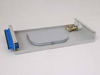

Fiber Optic Terminal Box – GP

Mainly used for the connection before cables from outside plant to terminal facilities, with termination and splice tray.
Features
· Wall-mounted installation for corridors and weak current wells
· FC/SC fiber connectors
· Solid fastening devices for cables
· (Cold) welding and sc connector are suitable for optical distribution cable
· Finely designed cable routing guarantees curvature radius of cable and fiber
Ordering Guide
NO. |
Type |
Dimension (mm) H*W*D |
Description |
1 |
GP-F12a |
40*170*300 |
12 Ports，FC |
2 |
GP-F24a |
50*170*300 |
24 Ports，FC |
3 |
GP-F48a |
100*170*300 |
48 Ports，FC |
4 |
GP-S12a |
40*170*300 |
12 Ports，SC |
5 |
GP-S24a |
50*170*300 |
24 Ports，SC |
6 |
GP-S48a |
100*170*300 |
48 Ports，SC |